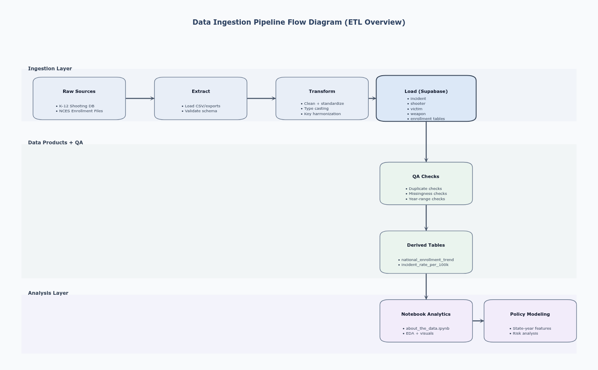
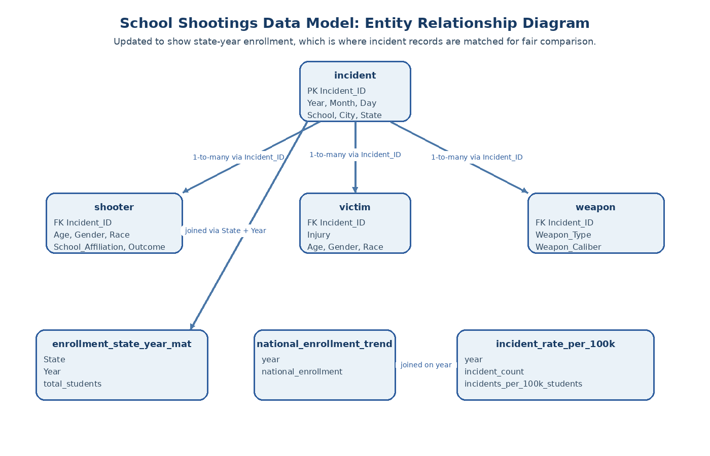
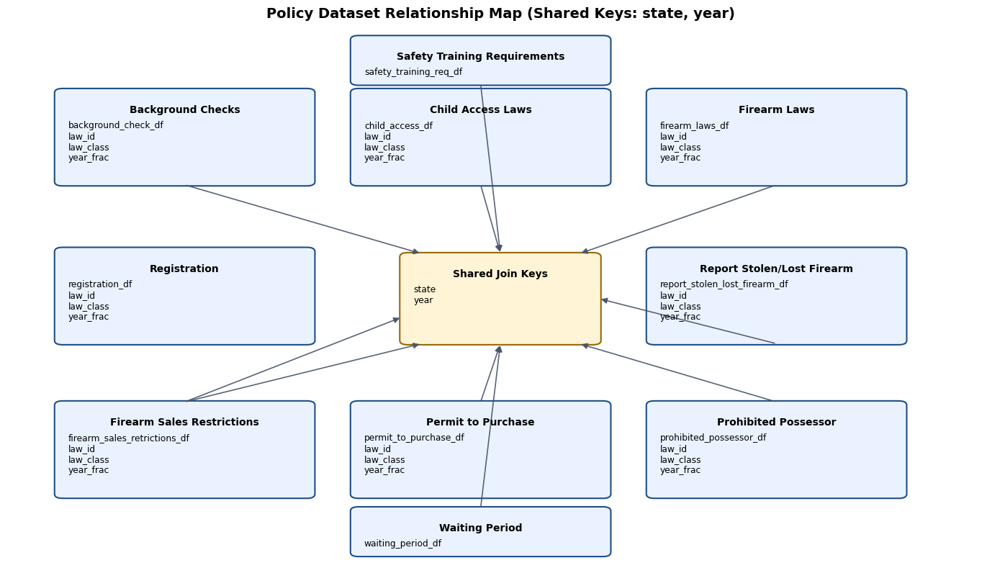
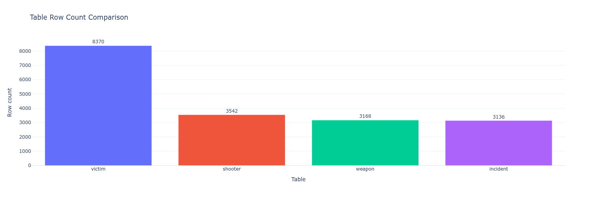
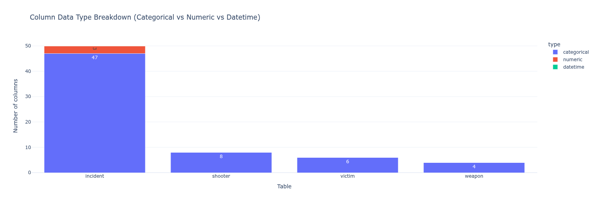
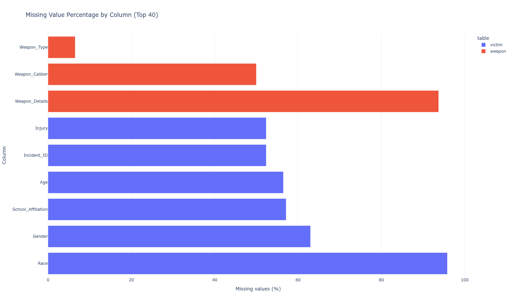
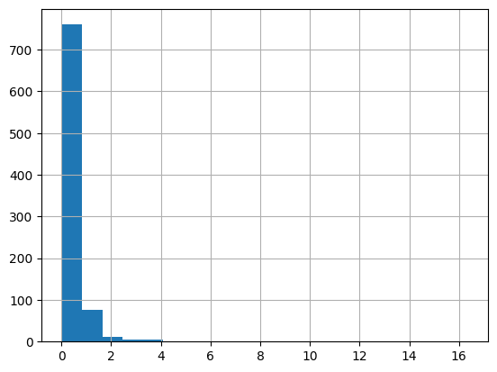

Capstone Project 2026
Data Overview
In this section, we introduce the data behind our project: what tables we use, how the information is organized, how the pieces connect, and what broad patterns are already visible before any deeper analysis begins.
What Data We Are Using
Our project combines event records, people and weapon details, student enrollment, and state policy information.
Incident table
This is the main event table. Each row represents a school shooting incident and includes the date, school, location, and victim counts.
Shooter table
This table adds shooter details linked to each incident, such as age, gender, race, school affiliation, and outcome.
Victim table
This table records victim-level details, including injury type, age, gender, race, and school affiliation.
Weapon table
This table captures weapon information for each incident, including weapon type, caliber, and any extra description available.
Enrollment data
This table stores student counts by state and year so we can compare incident activity against the size of the student population.
Policy data
These are state-by-year policy tables covering areas like background checks, waiting periods, registration, child access laws, and K-12 settings.
We also use prepared year-level summary tables for national enrollment and national incident rates over time.
Data Structure
The data is organized around a few shared fields that make the tables easy to connect.
Main event fields
- Incident_ID: the unique ID for one event
- Year, Month, Day, Date: when the event happened
- School, City, State: where the event took place
- Victims_Killed, Victims_Wounded, Number_Victims: how many people were harmed
Detail fields
- School_Affiliation: how a shooter or victim was connected to the school
- Age, Gender, Race: background details when available
- Weapon_Type, Weapon_Caliber: what kind of weapon was involved
Context fields
- State and Year: the keys used to connect incidents, enrollment, and policies
- total_students: student enrollment in a state and year
- year: the field used in national trend tables
What the values look like
Most of the core tables are made up of labels and categories such as state names, school affiliation, injury type, and weapon type.
Where numbers appear
Numbers mainly show up in fields like year, month, day, number of victims, and student enrollment.
Data Size and Coverage
The project combines detailed event tables with broader state-by-year context.
50 columns
8 columns
6 columns
4 columns
3 columns: state, year, total students
Main state-year comparisons focus on 1987–2025
The cleaned state list includes Washington, D.C.
The policy tables are compact state-by-year tables with 3 columns each, and their sizes range from 315 rows to 2,295 rows depending on the policy.
How Data Is Stored in Supabase
Supabase is the database where we keep the project tables in one place. Instead of one large file, the data is organized into smaller connected tables.
How we organize it
- Separate tables hold incidents, shooters, victims, and weapons.
- Enrollment is stored by state and year.
- Policy tables are also stored by state and year.
- Prepared summary tables track national enrollment and national incident rates over time.
Why this helps
- It keeps detailed event records separate from larger state-level context.
- It makes it easier to connect the right information at the right level.
- It supports both event-level detail and national trend views.

How the Data Connects
The tables link together through shared IDs and shared location-and-time fields.
Incident-level links
- Incident_ID connects the incident table to shooter, victim, and weapon details.
- This lets us move from one event to the people and weapons connected to that event.
State-year links
- State + Year connects incidents to enrollment.
- State + Year also connects incidents to the policy tables.
- This lets us place each event pattern inside a broader state and time context.


What the Data Looks Like
These visuals give a quick picture of table size, column makeup, and where detail is more limited.




Key Patterns in the Data
Before any deeper analysis, a few broad patterns are already visible in the data itself.


Patterns we can see directly
- The data covers several decades, which makes long-term time patterns visible.
- The later years show a higher national incident rate than much of the earlier timeline.
- The number of records differs a lot across tables because one incident can link to several victims, shooters, or weapons.
Patterns in structure
- Most of the core data is descriptive rather than purely numeric.
- Detailed victim and weapon information is less complete than core incident location and date information.
- State and year act as the bridge between event data, enrollment, and policy context.
Why This Data Matters
This dataset is useful because it combines detailed event records with broader context about time, place, student population, and policy environment.
It captures the event itself
We can see when an incident happened, where it happened, and how many people were harmed.
It adds supporting detail
We can connect incidents to shooter, victim, and weapon records instead of keeping all detail in one crowded table.
It adds state-year context
We can place incident activity next to student enrollment and policy information for the same state and year.
Why this supports our project
- It supports both individual event detail and broader trend views.
- It is organized in a way that makes cross-table connections clear.
- It gives us a practical foundation for explaining both the data and the results to an audience.
Bottom line
We are not working from a single flat file. We are working from a connected data system that brings together incidents, people, weapons, enrollment, and policy context in a way that is clear enough to present and strong enough to support the rest of the project.